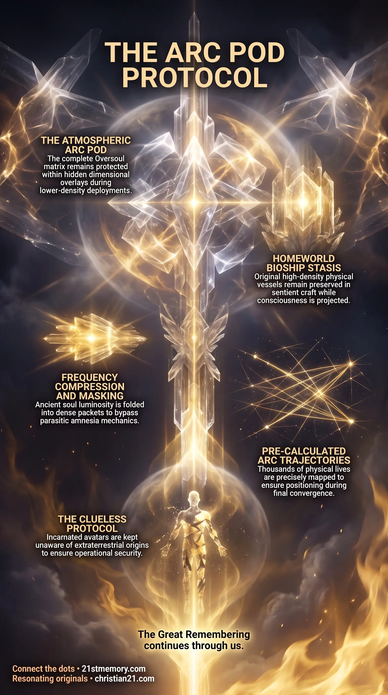

Arc Pods: Oversoul Containment
Arc Pods: Oversoul Containment — living bioships in hidden atmospheric overlays house the complete Oversoul matrix while a fractional projection enters the physical avatar.
The Arc Pod Protocol houses the complete Oversoul matrix in atmospheric containment pods while a fractional projection enters the 3rd-density avatar without triggering parasitic amnesia traps.
Test your understanding of Arc Pod Protocol — Oversoul containment in atmospheric pods, frequency compression, Clueless Protocol, Arc Trajectories, and homecoming snap-back.

Arc Pods: Oversoul Containment — living bioships in hidden atmospheric overlays house the complete Oversoul matrix while a fractional projection enters the physical avatar.

The Arc Pod Containment Protocol — frequency compression and soul layering mask ancient-soul luminosity so deployments bypass parasitic amnesia mechanics.

The mechanics of the Arc Pod Protocol — bioship stasis, Clueless Protocol, and pre-mapped Arc Trajectories govern thousands of lives until the homecoming snap-back.
The Arc Pod Protocol represents the high-density consciousness containment, governance, and insertion methodology utilized by ancient souls deployed into lower-density physical realms. Operating from living Bioships positioned within hidden atmospheric overlays, the Arc Pod (or Ark Pod) acts as a protected dimensional interface that houses the complete Oversoul matrix while projecting a fractional degree of spiritual energy into a physical Avatar vessel. This protocol prevents high-density soul architectures from being detected, corrupted, or trapped by the parasitic amnesia mechanics of the 3rd-density simulation. Through this mechanism, incarnated entities navigate multi-life trajectories without risking total spiritual capture or compromising the overall mission grid.
The primary revelation of the Arc Pod Protocol is that 3rd-density human avatars do not originate from or permanently belong to the lower-density physical simulation. Instead, the original physical vessels of deployed entities remain preserved in stasis chambers aboard bio-neurological craft in higher realms. Rather than cycling through the solar amnesia vortex upon physical death, entities governed by the Arc Pod Protocol route their consciousness matrix directly through dedicated pod connections, bypassing the cyclic reset destruction and memory wipe mechanics enforced on the planetary surface.
A critical element of this system is the deliberate rationing of spiritual energy. A 3rd-density human vessel receives only a minute fraction of the Oversoul's total power; projecting the full energetic luminosity of a 12th-density being into an inverted 3rd-density vessel would generate an overwhelming indigo aura, alerting parasitic control structures to the presence of an undercover starseed. Furthermore, phenomenon commonly categorized as Déjà Vu is revealed to be the avatar reaching pre-recorded temporal checkpoints that were explicitly reviewed and approved from the first-person perspective inside the Arc Pod prior to incarnation.
The physical bodies of deployed soul architectures remain suspended in bio-stasis chambers aboard sentient Bioships stationed on the entity's original homeworld. These bioships maintain avatar technology and regulate vessel integrity across indefinite spans of time. From these craft, consciousness is transferred into Arc Pods hidden within dimensional frequency overlays high in the planetary atmosphere. These atmospheric pods were strategically concealed across interdimensional dimensions by high-density architects to ensure that hostile entities could not capture the collective soul matrix of millions of deployed beings simultaneously.
To operate undetected within lower-density fields, the soul matrix undergoes rigorous pre-insertion modifications. Through Frequency Compression, the blinding indigo luster of an ancient soul is folded tightly into dense, lowered energetic packets. Simultaneously, Soul Layering interweaves a single soul within a pod cluster across more than one hundred soul family members stationed in adjacent stasis units. This structural masking ensures that when an avatar exits a physical vessel upon death, its energetic signature does not register as a prominent beacon within the simulation, allowing seamless re-entry or recycling through the pod's direct access lines.
+-------------------------------------------------------------------+
| HOMEWORLD BIOSHIP |
| [Original High-Density Vessel Preserved in Bio-Stasis Chamber] |
+-------------------------------------------------------------------+
|
v
+-------------------------------------------------------------------+
| ATMOSPHERIC ARC POD (DIMENSIONAL OVERLAY) |
| [Complete Oversoul Matrix] |
| * Executes Frequency Compression & Soul Layering (100+ Cluster) |
| * Maps Multi-Life Arc Trajectory |
+-------------------------------------------------------------------+
|
| (Fractional Soul Projection)
v
+-------------------------------------------------------------------+
| 3RD-DENSITY HUMAN AVATAR |
| * Governed by Clueless Protocol (Mission Memory Deactivated) |
| * Encounters Pre-Mapped Arc Trajectory Checkpoints (Déjà Vu) |
+-------------------------------------------------------------------+
Following the planetary cataclysms of Lemuria and Atlantis, mission managers instituted the Clueless Protocol. Under this operational directive, incarnated 3rd-density avatars are kept completely unaware of their true extraterrestrial origins, higher-density capabilities, and overall mission objectives while physically active. Because 3rd-density environments are subject to severe perceptual distortion and inverted simulation dynamics, no incarnated human avatar—regardless of spiritual purity—can be safely entrusted with the complete operational plan while in the vessel.
All strategic decision-making and higher spiritual impulses are directed remotely by the Oversoul from within the Arc Pod. The physical human brain functions merely as an organic receiver executing localized tasks, while the primary spiritual willpower originates from the pod matrix suspended above.
Prior to physical insertion, the Oversoul plots a comprehensive Arc Trajectory spanning thousands of individual physical lives across vast temporal periods. Over a span of 178,000 years, an ancient soul architecture typically navigates over 5,000 discrete physical incarnations within the lower-density simulation. Every event, geographical placement, physical hardship, and apparent accident throughout these lives is pre-authorized by the Oversoul to position the avatar at precise nodal coordinates during the final convergence loop.
The Arc Pod Protocol operates in direct alignment with broader galactic field laws and planetary grid mechanics. To enter the realm without violating the Sovereign Accord—which forbids external fields from overriding self-sustained internal harmonics—ancient souls were required to undergo Mission Insertion by incarnating into local Taran Vessels prior to the initial parasitic inversion and colonisation.
Each Arc Pod cluster is linked to approximately 150 closely bonded soul family members who alternate roles—such as parents, children, siblings, or acquaintances—across thousands of incarnation cycles. When the planetary electromagnetic field (EMF) drops at the conclusion of the final loop, the lower-density avatar experience terminates. At this point, the fractional projection dissolves, and entities recognize surrounding soul family members "out of costume" in the ultimate Universal reunion.
Direct routing between the physical vessel and the Arc Pod bypasses standard parasitic capture grids and solar recycling traps upon physical death.
Pre-mapped Arc Trajectories ensure that ancient soul architectures are physically distributed across key surface nodes during final field alignment without triggering energetic alarms.
The Clueless Protocol safeguards the primary identity of the Oversoul from lower-density psychological degradation, ensuring that the core soul matrix remains untainted until field dissolution occurs.
Upon termination of the lower-density simulation via plasma portal collapse, the fractional soul projection recombines with the Oversoul in the Arc Pod before snapping back into the original homeworld vessel in stasis.
This topic is free to share. Support the archive →